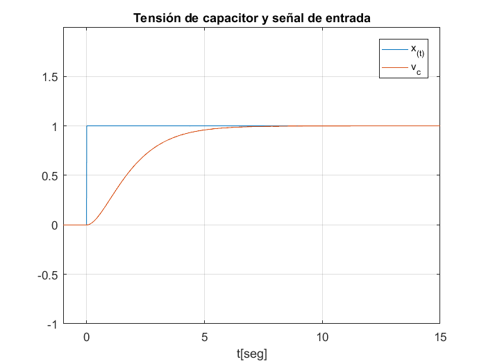
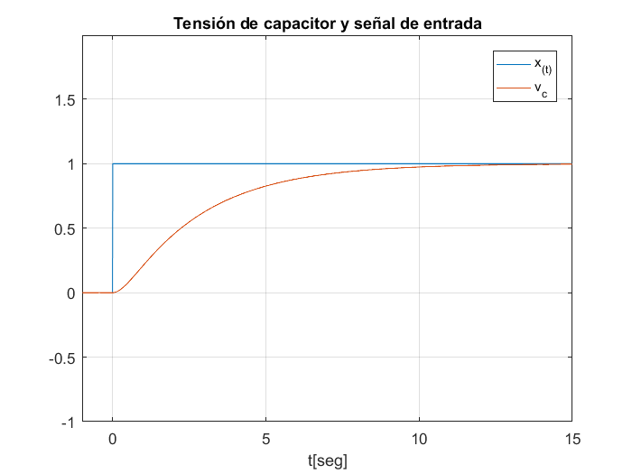
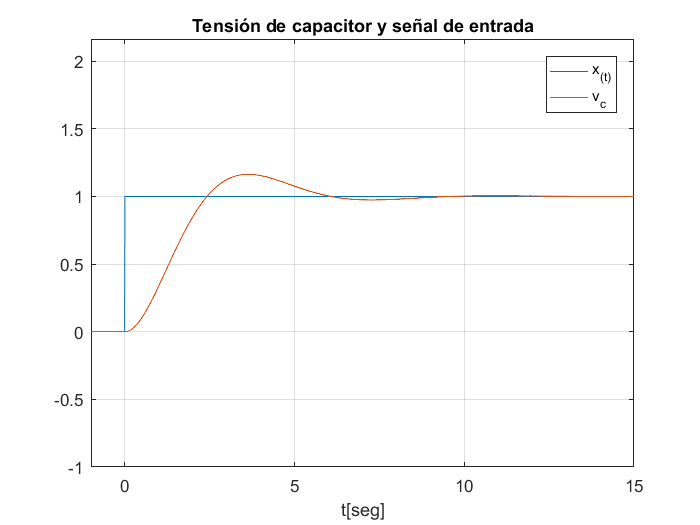

Contents
Script_c4
clc; % Limpia Command Window clear; % Limpia Workspace al liberar memoria (variables) close all; % Cierra todas las figura
Desarrollo del programa para resolución de la EDO 2do orden
dt = 0.01; % Creo diferencial de tiempo ti = -1; tf=15; % Creo variables de tiempo inicial y final t = ti: dt : tf; % Creo un vector temporal x = @(t) esc(t); % Defino funcion anónima para señal x con t como parametro de entrada % Caso 1: Amortiguamiento Crítico R = 4; L = 2; C = 0.5; % Defino las constantes del circuito RLC serie [t_caso1, vc_caso1] = f_resRLC(R, L, C, t, x); % Calculo de t y vc a traves de la función f_resRLC max_vc_caso1 = max(vc_caso1); % Creo variables que almacenan los máximos y mínimos. Así puedo modificar genericamente los limites del eje horizontal para graficar mejor min_vc_caso1 = min(vc_caso1); figure; plot(t, x(t), t_caso1, vc_caso1); grid on; axis([t(1) t(end) min_vc_caso1-1 max_vc_caso1+1]); % Gráfico Caso 1 de la señal vc(t) e x(t) title('Tensión de capacitor y señal de entrada'); xlabel('t[seg]'); legend('x_{(t)}', 'v_c'); % Caso 2: Sobreamortiguado R = 6; L = 2; C = 0.5; % Defino las constantes del circuito RLC serie [t_caso2, vc_caso2] = f_resRLC(R, L, C, t, x); % Calculo de t y vc a traves de la función f_resRLC max_vc_caso2 = max(vc_caso2); % Creo variables que almacenan los máximos y mínimos. Así puedo modificar genericamente los limites del eje horizontal para graficar mejor min_vc_caso2 = min(vc_caso2); figure; plot(t, x(t), t_caso2, vc_caso2); grid on; axis([t(1) t(end) min_vc_caso2-1 max_vc_caso2+1]); % Gráfico Caso 2 de la señal vc(t) e x(t) title('Tensión de capacitor y señal de entrada'); xlabel('t[seg]'); legend('x_{(t)}', 'v_c'); % Caso 3: Subamortiguado R = 2; L = 2; C = 0.5; % Defino las constantes del circuito RLC serie [t_caso3, vc_caso3] = f_resRLC(R, L, C, t, x); % Calculo de t y vc a traves de la función f_resRLC max_vc_caso3 = max(vc_caso3); % Creo variables que almacenan los máximos y mínimos. Así puedo modificar genericamente los limites del eje horizontal para graficar mejor min_vc_caso3 = min(vc_caso3); figure; plot(t, x(t), t_caso3, vc_caso3); grid on; axis([t(1) t(end) min_vc_caso3-1 max_vc_caso3+1]); % Gráfico Caso 3 de la señal vc(t) e x(t) title('Tensión de capacitor y señal de entrada'); xlabel('t[seg]'); legend('x_{(t)}', 'v_c');  